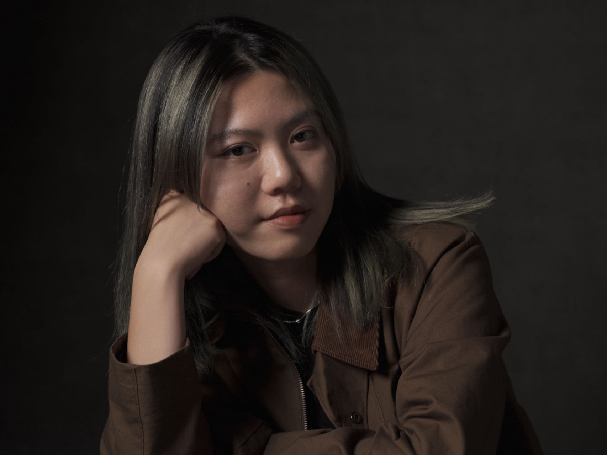

Sherry Wu
Home

Nice to meet you, I’m Sherry. I’m a senior product designer, currently working at Scoville and based in Tokyo. Previously, I worked at EDOCODE, Wish, Google and MetaDesign.
🇨🇳 Born and raised in Beijing, China, I moved to the United States during high school and got my Design and Human-Computer Interaction degree at Carnegie Mellon University. I worked in Bay Area before moving to Japan.
🏋️♂️ I developed my love for fitness while I was in the States. Currently I'm into Crossfit. I also love bouldering, hiking, and skiing.
💬 I speak English, Mandarin and Japanese.
I use design to make emerging technologies more accessible to people, and to humanize experiences with technologies through the user-centered design process.
Scoville Co., Ltd
Senior Product Designer
2025.1 - Now
Tokyo, Japan
Driving the design and research of EYEQ, Scoville’s AI interview product for new graduate hiring. Work hand-in-hand with the AI engineering team to design with cutting-edge language models, build testing and QA frameworks, and refine interaction flows for reliability at scale. Partner with the sales team to align the product with the needs of enterprise clients. Lead research with HR managers and candidates to uncover what builds trust and makes AI feel reliable, transparent, and usable in high-stakes recruitment.
EDOCODE Inc.
User Experience Lead
2022.9 - 2024.12
Tokyo, Japan
Founded and released Gojiberry, a product that helps SMB e-commerce stores gain deeper insights into their customers. Currently leading a cross-functional team of 9 to identify customer problems, establish vision, set strategy, build and ship solutions. Conduct user research and testing to uncover and understand user needs, pain points, and behaviors. Help shape a product that is intuitive and elegant for small-to-medium business owners.
Wish
Product Designer
2020.6 - 2022.09
San Francisco, CA
Led design for Wish’s consumer experience, including the core purchase experience, merchant programs, post-purchase experience, and growth. Partnered with product managers, engineers, data scientists, to define problems and goals, map user flows, prototype interactions, and launch new product features and services. Led the design culture committee to foster deeper connection and learning environment for the design team of 30 designers.
UX Design Intern
2019.5 - 2019.8
Mountain View, CA
Worked closely with engineers, PMs, and other stakeholders to develop and refine the welcome experience of the Google app on iOS to improve user retention and engagement.
MetaDesign
Visual Design Intern
2018.5 - 2018.8
Worked with the design team to develop visual systems for global and local brands. Designed logos, uniforms, packaging, and closing sequence for television commercials.